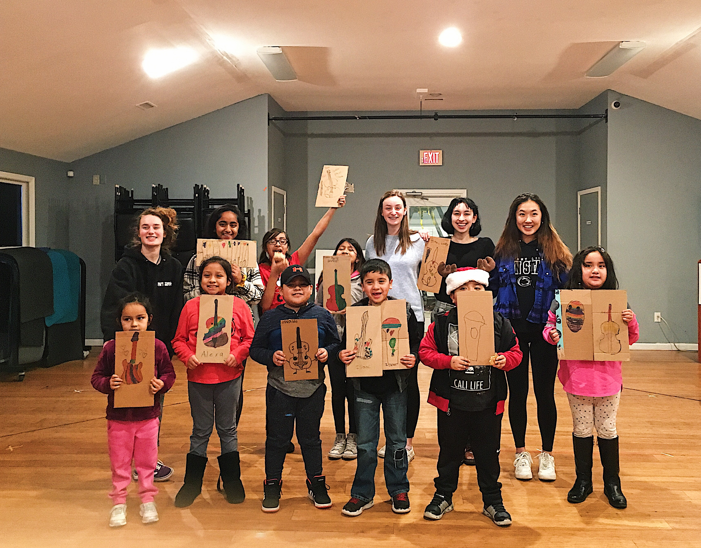

Like many musicians, I started my "music career" with piano lessons in early elementary school. However, I found true love towards the cello in 4th grade and decided to dedicate all my energy in it rather than between both instruments.
My favorite memories include performing with Temple Music Preparory's Chamber Orchestra in Philadelphia and going on tour with The Youth Orchestra of Bucks County in Andalusia, Spain for an international music festival. Studying the cello has helped me meet lifetime friends, refine public speaking/performance skills, and create a deeper understanding of myself.
Giving Back
D-Town Young Musicians
Founded to help low income students access music education.
The Process
Click to learn more!